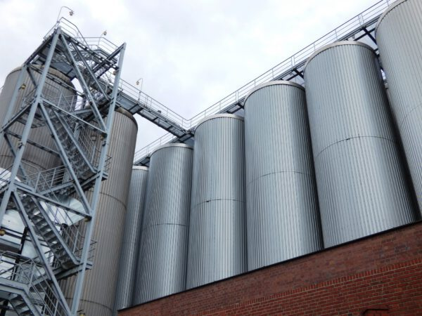

Tous les types de cuves de stockage, toute matière stockée dans des cuves de stockage en vrac peuvent éventuellement s'accrocher aux murs et réduire la capacité ou créer des problèmes d'écoulement. Le nettoyage des silos sert à réduire la contamination microbienne, c'est-à-dire la contamination accidentelle ou non de certains types de matériaux infectieux. En raison de la réglementation sur l'hygiène des aliments pour animaux et la salmonelle, le nettoyage des silos est une obligation pour tout fabricant de denrées alimentaires.r.

Nous vous proposons donc un nettoyage et une désinfection complets du silo, tant à l'extérieur qu'à l'intérieur. Nettoyage de la trémie, du convoyeur et des tuyaux d'évacuation, trempage des débris Mise en œuvre de tous les travaux d'étanchéité et d'entretien nécessaires. Les silos peuvent être nettoyés de différentes manières, mais pour la plupart, le processus de nettoyage consiste à brosser l'intérieur du silo et à le racler. Nos techniciens qualifiés prennent un soin particulier pour éviter de rayer les silos.